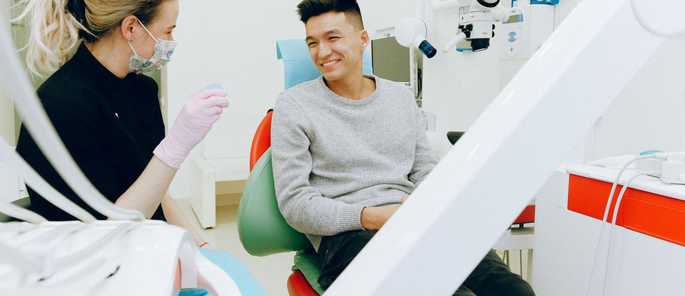

El 50% de los pacientes no entra nunca por tu puerta

Dedicas tiempo, dinero y energía a captar pacientes. Y tu mayor competencia no es la clínica de al lado. Es la mitad de la población que no ha decidido ir al dentista todavía.
En España se gastaron 12.000 millones de euros en tratamientos dentales en 2024. Récord histórico. El sector lleva quince años creciendo casi al doble que el PIB.
Y aun así, solo el 50% de la población acude al dentista cada año.
La otra mitad tiene dientes, tiene boca, y con alta probabilidad tiene caries, encías que no están bien o un tratamiento pendiente que lleva años aplazando. Pero no va.
El error de la guerra de captación
La mayoría de las clínicas dentales, cuando quieren crecer, hacen lo mismo: más publicidad, más ofertas, primera consulta gratis, precios más bajos.
Todo eso apunta al mismo sitio: el 50% que ya va al dentista. El que compara precios. El que está en otra clínica y quieres convencer de que se cambie a la tuya.
Es un mercado saturado donde solo hay una forma de ganar: ser el más barato. Y ser el más barato significa, normalmente, no ser sostenible.
La guerra de precios no la gana la mejor clínica. La gana la que más aguanta con menos margen.
Mientras tanto, ese otro 50% lleva años fuera de tu radar. Y fuera del radar de casi todo el mundo.
Por qué no van: no es lo que piensas
La primera explicación que da casi cualquier dentista es el dinero. "No van porque es caro."
Pero el Barómetro de Salud Bucodental 2026 lo desmonta: el 43% de los pacientes que tienen un tratamiento aceptado y pendiente lo aplazan por dinero. El 15%, por pura desidia.
El dinero no es el único freno. En muchos casos ni siquiera es el principal.
La causa más común de no ir al dentista es más simple y más incómoda: no han tomado la decisión. No tienen dolor ahora mismo. No tienen una razón urgente. Y como no hay urgencia, lo aplazan indefinidamente.
- No es miedo irracional. Es indiferencia racional: "Si no me duele, no es el momento."
- No es falta de información. Saben que deberían ir. Lo llevan en la lista de pendientes desde hace años.
- No es precio. O no siempre. Muchos de ellos gastan en otras cosas sin pensárselo dos veces.
Con ese perfil, un anuncio de "primera consulta gratis" no convierte. Porque la barrera no es económica. Es de motivación.
Lo que sí funciona para llegar a ese 50%
Si la barrera es la indiferencia, la solución no está en hacer más ruido. Está en construir presencia con paciencia.
Estos son los ejes que funcionan para trabajar ese mercado dormido:
- Contenido educativo regular. No ventas. Información útil que normaliza ir al dentista antes de que duela: por qué revisar las encías, qué significa ese sensibilidad al frío que ignoramos, cuándo es demasiado tarde para evitar una endodoncia. Ese contenido trabaja seis meses después de publicarse.
- Visibilidad local trabajada. Ficha de Google optimizada, reseñas recientes, fotos del equipo y del espacio. Cuando alguien busca por primera vez "dentista + [tu zona]", tienes que estar. Y tienes que parecer de confianza.
- Boca a boca activado. Tus pacientes actuales son tu mejor acceso a ese 50%. No mediante descuentos por referir, sino mediante una experiencia tan buena que hablan de ti solos. La conversación de WhatsApp "¿tú tienes dentista de confianza?" es la publicidad más eficaz que existe.
- Base de datos de contactos que no son (aún) pacientes. Personas que dejaron sus datos en algún momento, que descargaron algo, que preguntaron por un servicio y no se convirtieron. Ese lista tiene valor si la trabajas con contenido útil, no con descuentos.
El cambio de mentalidad que lo cambia todo
La clínica que compite por el mismo 50% que ya va al dentista está en una carrera de desgaste.
La clínica que trabaja el otro 50% no tiene competencia directa. Porque casi nadie lo hace.
No se trata de ignorar la captación tradicional. Se trata de no poner toda la energía ahí. De entender que el crecimiento sostenible viene de ampliar el mercado, no solo de robar cuota.
12.000 millones de euros se mueven en este sector cada año. Y la mitad del mercado potencial sigue sin entrar por ninguna puerta.
La pregunta no es cómo conseguir que el paciente de la clínica de al lado venga a la tuya. La pregunta es cómo llegar antes que nadie a los que aún no han decidido ir.
Eso se construye con presencia, con confianza y con tiempo. No con descuentos.
Fuente: Informe Key-Stone / Fenin "Panorama y perspectivas del sector dental en España", Expodental 2026. Ver en iSanidad →